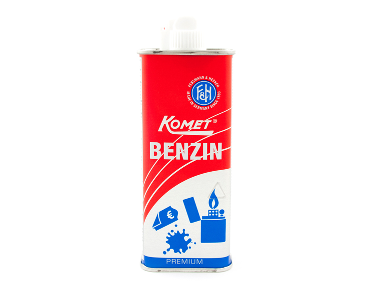

Welcome to benzinas
Benzinas - vertimai, sinonimai, gramatika, statistika - dictionaries24.com
2020.10.29 11:20Nav Dictionaries24 .com D 24 Nemokamas žodynas Žodžių sąrašas Apie žodyną Nuorodos EN ES DE FR IT PT NL RU NO SE FI DK CZ PL HU TR GR UK AL BG BY EE HR IS LV MK RO SI SK Nemokamas žodynas Žodžių sąrašas Benzinas
Žodis: benzinas
Susiję žodžiai: benzinas
benzinas internetu, benzinas i dyzeli, benzinas pigiau, benzinas kaina, benzinas vs dyzelis, benzinas dujos, benzinas 98e15, benzinas 95, benzinas ar dyzelis, benzinas 98Sinonimai : benzinas
benzinas, gazolinas, degalai, dujos, kas nors juokinga, kasyklų dujos, šviečiamosios dujos, sultys, syvai, esmė, dvasia, energijaVertimai : benzinas
Žodynas anglų Vertimai gas, gasoline, petrol benzinas angliškaiŽodynas ispanų Vertimai gas, bencina, gasolina benzinas ispaniškai
Žodynas vokiečių Vertimai benzin, blähungen, blähung, blähsucht, gaspedal, ... benzinas vokiškai
Žodynas prancūzų Vertimai essence, benzine, flatulence, gaz, carburant, ... benzinas prancūziškai
Žodynas italų Vertimai benzina, gas benzinas itališkai
Žodynas portugalų Vertimai gasolina, petrificar, alho, gás, benzina benzinas portugališkai
Žodynas olandų Vertimai benzine, gas benzinas olandiškai
Žodynas rusų Vertimai горючее, бензобак, бензовоз, бензин, газолин, ... benzinas rusiškai
Žodynas norvegų Vertimai gass, bensin benzinas norvegiškai
Žodynas švedų Vertimai bensin benzinas švediškai
Žodynas suomių Vertimai kaasu, kerskailla, bensiini benzinas suomiškai
Žodynas danų Vertimai gas, benzin benzinas daniškai
Žodynas čekų Vertimai benzín, plyn, palivo benzinas čekiškai
Žodynas lenkų Vertimai benzyna, gaz, gazować, paliwo, gazownictwo, ... benzinas lenkiškai
Žodynas vengrų Vertimai gázbenzin, motorbenzin, üzemanyag, benzin, gáz benzinas vengriškai
Žodynas turkų Vertimai benzin benzinas turkiškai
Žodynas graikų Vertimai αέριο, βενζίνη benzinas graikiškai
Žodynas ukrainiečių Vertimai газова, газовий, бензин, газ, газолін, ... benzinas ukrainietiškai
Žodynas albanų Vertimai naftë benzinas albaniškai
Žodynas bulgarų Vertimai газ, бензин benzinas bulgariškai
Žodynas baltarusių Vertimai бензін, бэнзін benzinas baltarusiškai
Žodynas estų Vertimai gaasitama, bensiin, gaasipedaal benzinas estiškai
Žodynas kroatų Vertimai gas, plinom, plina, benzin, plin benzinas kroatiškai
Žodynas islandų Vertimai gas benzinas islandiškai
Žodynas latvių Vertimai gāze, benzīns benzinas latviškai
Žodynas makedonų Vertimai гас benzinas makedoniškai
Žodynas rumunų Vertimai benzină, gaz benzinas rumuniškai
Žodynas slovėnų Vertimai plin, bencin benzinas slovėniškai
Žodynas slovakų Vertimai benzínový, benzín, plynový, plyn benzinas slovakiškai
Populiarumo statistika: benzinas
Labiausiai ieškoma pagal regionus
Kauno apskritis, Klaipėdos apskritis, Vilniaus apskritis, Panevežio Apskritis, Alytaus apskritisLabiausiai ieškoma pagal miestus
Panevėžys, Kaunas, Klaipėda, VilniusAtsitiktiniai žodžiai
bendruomenė sinonimai beprotis šalia sinonimai faktas gramatika gabaliukas elegantiškas žiauna kirvis magnetizmas gramatika filosofija vertimai reaktorius sinonimai interviu sinonimai dialektas angliškai rūstus angliškai tankas angliškai vaikinas angliškai iliustracija angliškai celiuliozė angliškai verkti angliškai palaiminimas angliškaiDictionaries24.com - Išbandykite mūsų žodyną ir pamatykite kaip paprasta juo naudotis.
